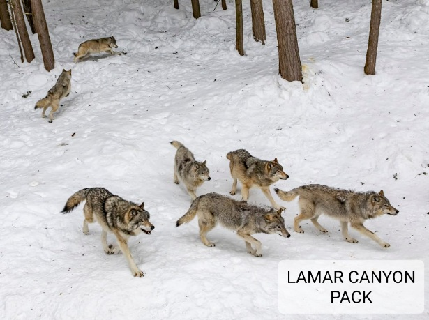
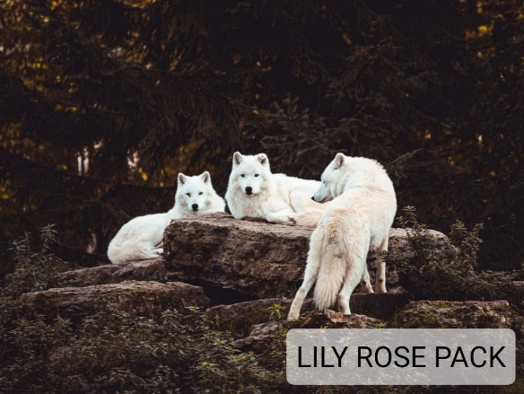
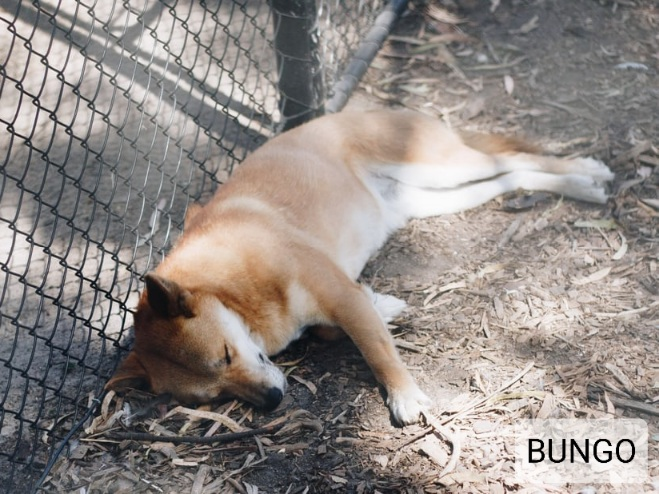
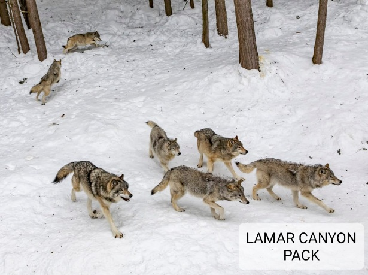
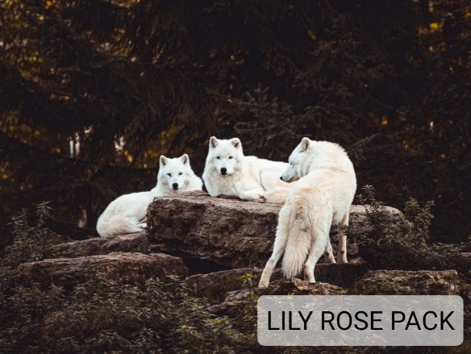
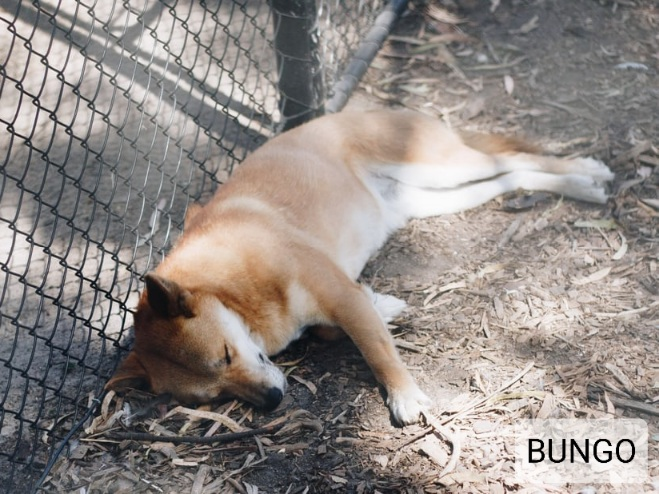
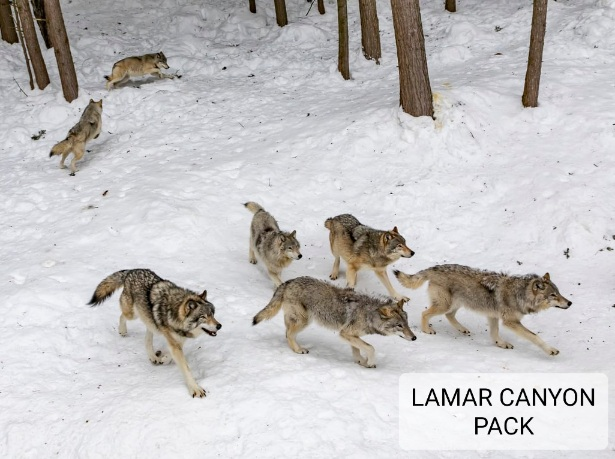
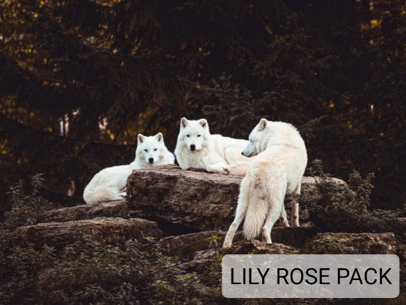
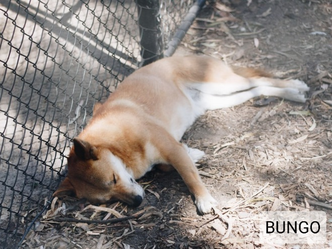

  
  Our animals
We have a variety of animals on our ranch, ranging from felines, birds, aquatic animals, prey animals and canines. They all are taken care of from what they need, and are not treated differently (unless so is needed). Below are a few photo sliders of our different species of animals.
Our Felines
Our canines
  